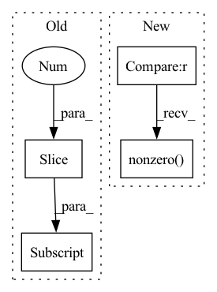

Pattern ID :31808
Before Change
det_max.append(dc[:1]) // save highest conf detection
if len(dc) == 1: // Stop if we"re at the last detection
break
iou = bbox_iou(det_max[-1], dc[1:] ) // iou with other boxes
dc = dc[1:][iou < nms_thres] // remove ious > threshold
// Image Total P R mAPAfter Change
while len(ind):
di = dc[ind[0]:ind[0] + 1]
det_max.append(di) // save highest conf detection
reject = bbox_iou(di, dc[ind]) > nms_thres
[ind.pop(i) for i in reversed(reject.nonzero() )]
// while dc.shape[0]: // SLOWER
// det_max.append(dc[:1]) // save highest conf detection
// if len(dc) == 1: // Stop if we"re at the last detectionIn pattern: SUPERPATTERN
Frequency: 3
Non-data size: 4
Instances Fragment ID: 92877361
Project Name: nightsnack/yolobile
Commit Name: 2df8d7e9f6fd3a3e0233029bf39d4db66807a229
Time: 2019-03-15
Author: glenn.jocher@ultralytics.com
File Name: utils/utils.py
M Class Name: AnonimousClass
N Class Name: AnonimousClass
M Method Name: non_max_suppression(3)
N Method Name: non_max_suppression(3)
M Parent Class:
N Parent Class:
M File Name: utils/utils.py
N File Name: utils/utils.py
M Start Line: 388
M End Line: 398
N Start Line: 389
N End Line: 399
Before Change
src_idx = self._get_src_permutation_idx(indices)
target_classes = torch.full(src_logits.shape[:2] , 0, dtype=torch.int64, device=src_logits.device)
target_classes[src_idx] = 1
loss_ce = F.cross_entropy(src_logits.transpose(1, 2), target_classes, weight=self.cls_weights.cuda(), label_smoothing=0.0)After Change
cls_labels = soft_labels.flatten()
// Remove non existent classes
valid_ids = (cls_labels != -1).nonzero()
loss_ce = F.binary_cross_entropy_with_logits(cls_preds[valid_ids].squeeze(), cls_labels[valid_ids].squeeze())
return loss_ce
Fragment ID: 92877360
Project Name: bwittmann/transoar
Commit Name: 09f57bf9bd1146b57db0cce80a0901defe5e5d63
Time: 2022-02-15
Author: bastian.wittmann@tum.de
File Name: transoar/models/criterion.py
M Class Name: TransoarCriterion
N Class Name: TransoarCriterion
M Method Name: loss_class(3)
N Method Name: loss_class(3)
M Parent Class: nn.Module
N Parent Class: nn.Module
M File Name: transoar/models/criterion.py
N File Name: transoar/models/criterion.py
M Start Line: 40
M End Line: 47
N Start Line: 41
N End Line: 47
Before Change
idx = self._get_src_permutation_idx(indices)
target_classes_o = torch.cat([t["labels"][J] for t, (_, J) in zip(targets, indices)])
target_classes = torch.full(src_logits.shape[:2] , 0,
dtype=torch.int64, device=src_logits.device)
target_classes[idx] = target_classes_o
After Change
cls_labels = matches.flatten().float()
// Remove non existent classes
valid_ids = (soft_labels.flatten() != -1).nonzero()
loss_ce = F.binary_cross_entropy_with_logits(cls_preds[valid_ids].squeeze(), cls_labels[valid_ids].squeeze().cuda())
return loss_ce
Fragment ID: 92877363
Project Name: bwittmann/transoar
Commit Name: 50cc4661dc99397fe437a829cff6659bfd58eaba
Time: 2022-04-19
Author: bastian.wittmann@tum.de
File Name: transoar/models/criterion.py
M Class Name: TransoarCriterion
N Class Name: TransoarCriterion
M Method Name: loss_class(4)
N Method Name: loss_class(4)
M Parent Class: nn.Module
N Parent Class: nn.Module
M File Name: transoar/models/criterion.py
N File Name: transoar/models/criterion.py
M Start Line: 45
M End Line: 54
N Start Line: 42
N End Line: 48